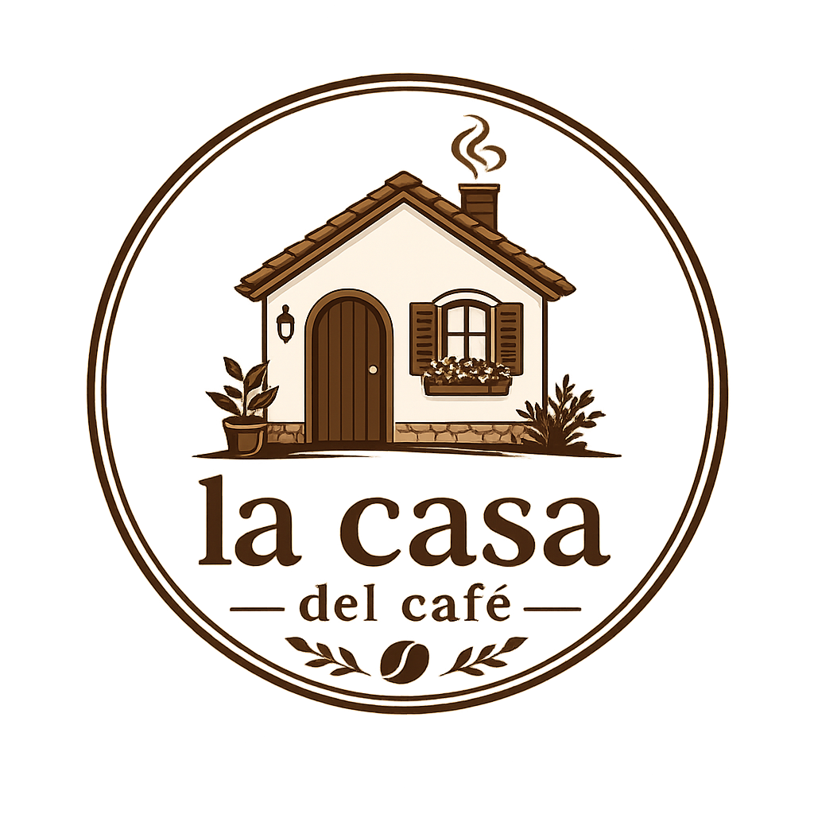

Atencion
Lunes a viernes de 9:00 a 18:00, con respuestas tranquilas y cuidadas.

Un espacio sencillo para consultas, pedidos y visitas. Estos datos son de ejemplo y mantienen el tono clasico de la cafeteria.
Lunes a viernes de 9:00 a 18:00, con respuestas tranquilas y cuidadas.
Consultas por cafe en grano, reservas y preparaciones especiales para eventos.
La direccion es ficticia, pero la idea es recibir al cliente con una imagen sobria.